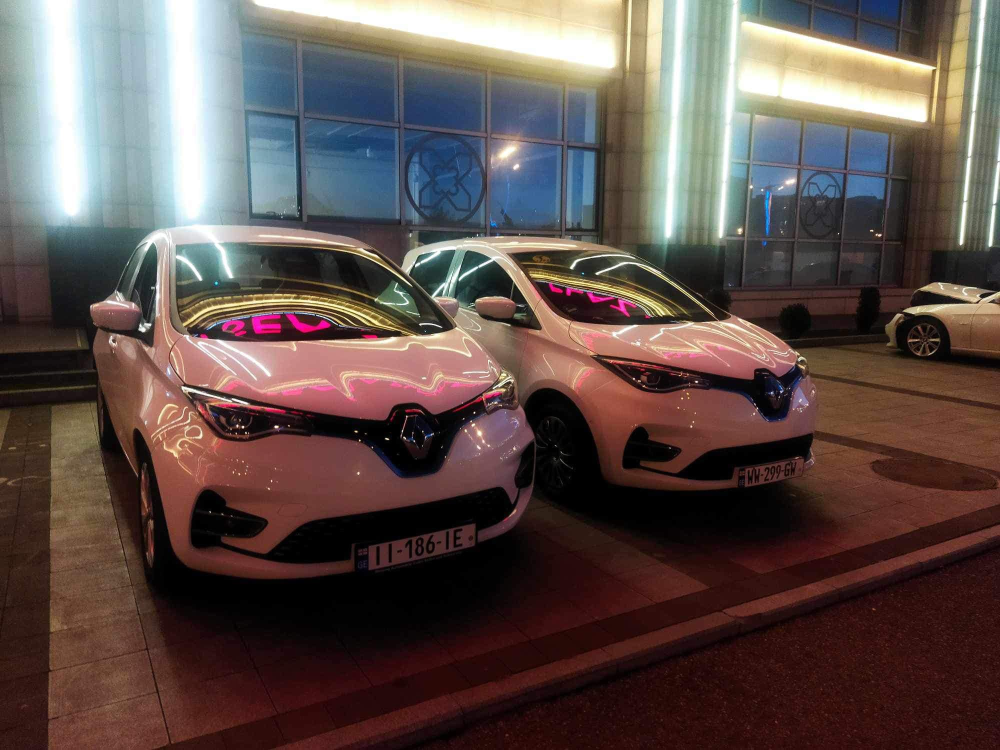

Lulini travel
🚖🌍 Welcome to Lulini Transport! 🌟🚕🌟 We're your go-to transportation company,
offering reliable taxis, exciting tours, and convenient car rentals. 🌟✨ Explore
new horizons with us and experience the world like never before! 🌍🌟

Whether you're planning a scenic tour, a business trip, or a family vacation,
we've got you covered with our reliable and comfortable transportation solutions.
💼🌍 With Lulini Transport Service, you can now explore Georgia's stunning landscapes,
historical landmarks, and vibrant cities hassle-free. Sit back, relax, and let our
experienced drivers take you on an unforgettable journey through this enchanting country.
👉 Discover the iconic charm of Tbilisi's winding streets, marvel at the breathtaking beauty
of the Caucasus Mountains, or immerse yourself in the rich culture and traditions of ancient
towns like Mtskheta and Kutaisi. Our top-notch vehicles are designed to ensure your comfort
and safety throughout your exploration.
🤝 At Lulini, we prioritize customer satisfaction above all else. Our professional drivers
are not only experts on Georgia's best routes and attractions but also friendly companions
who will make your trip even more enjoyable. We take pride in delivering exceptional service
and creating unforgettable memories for our valued clients.

🚐🌟 Need extra space for your adventures? Lulini Transport has you covered!
Rent one of our comfortable minivans for just $80 a day and hit the road with ease.
More room, more memories—book your ride today! 🛣️✨